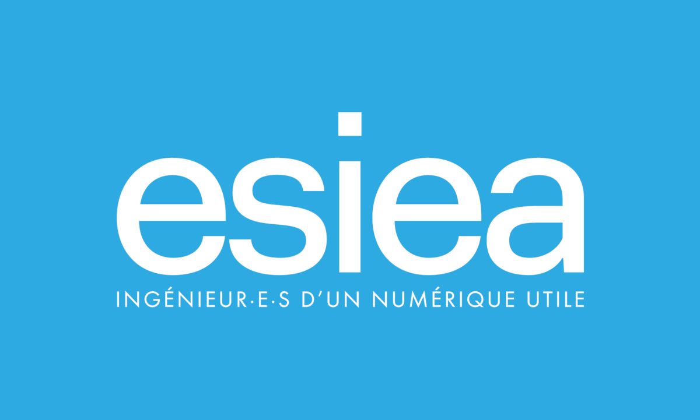
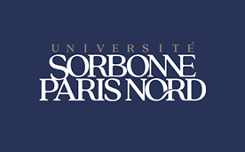

Parcours scolaire
← Retour
Septembre 2019 – Juin 2022
D
Lycée polyvalent Dorian
Baccalauréat général spécialités mathématiques et sciences de l'ingénieur.
Septembre 2022 – Juillet 2023

École Supérieure d'Informatique Électronique du Numérique — ESIEA
Première année de cycle préparatoire intégré.
Septembre 2023 – Juin 2024

Université Sorbonne Paris Nord
Première année de licence mathématiques.
Septembre 2024 – Maintenant
Aurlom Education — BTS SIO option SISR
Formation en alternance pour développer mes compétences en administration des systèmes et réseaux.
Voir le parcours professionnel →